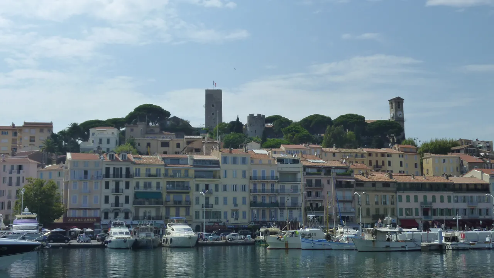
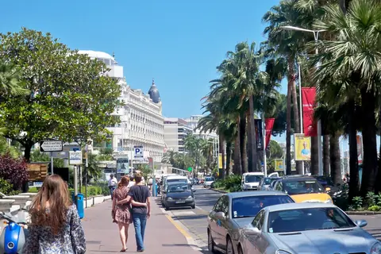
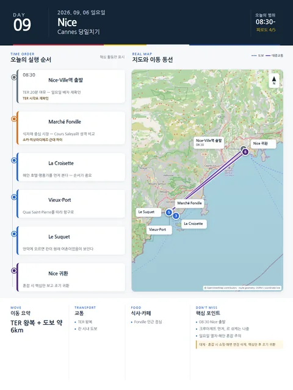

Day 9 · 9/6 일 · Nice

오늘의 주요 장소



- 핵심 실행
- Cannes 당일치기
- 권장 출발
- 08:30 Nice 출발 권장
- 완충
- TER 20분 여유
시간표
| 시간 | 일정 | 실행 포인트 |
|---|---|---|
| 08:40 전후 | Nice-Ville → Cannes TER | 당일 운행 재확인 |
| 09:30–10:20 | Marché Forville | 생활시장·간식 |
| 10:20–11:20 | Le Suquet | 골목·전망 |
| 11:20–12:00 | Vieux-Port | 항구 보행 |
| 12:00–13:00 | 가벼운 점심 | 시장식 또는 간단한 해산물 |
| 13:00–15:40 | Palais·Croisette·해변 선택 | 쇼핑연장은 삭제 가능 |
| 16:00 전후 | Nice 귀환 | 저녁 전 숙소휴식 |
피로도
4/5
이 날의 장소
일자별 시간표와 본문 표기에서 찾은 것이다. 하루의 전부가 아니라 장소 카드가 있는 것만 담는다.
이 날의 메모
Cannes 당일치기: 시장, 구시가지, 항구, Croisette
Forville·Le Suquet·Croisette를 핵심으로 두고 해변 체류를 조절한다.
상세 실행 확인
- 최고 리스크
- 일요일 열차·해안혼잡
- 우선 삭제
- 쇼핑·해변연장
- 대체안
- Cannes 핵심만 후 조기귀환
- 식사·휴식
- Forville 인근 점심
- 잠금 필요
- TER
Daily Action Map

실제 좌표와 OpenStreetMap을 사용한 실행용 요약입니다. 도로·대중교통 상황은 출발 직전에 다시 확인하세요.